De autos van Bradge
Op deze pagina een selectie van de autos die door Bradge zijn opgereden.
Credits voor bijgaand commentaar gaan naar Mostly Cars op YouTube met bijgaande data van het Fok! forum.
Zijn autohistorie is eigenlijk een heel treffende weergave van zijn wispelturige en impulsieve persoonlijkheid, met het vaak inruilen van auto's om onbenullige redenen en het zonder kritisch nadenken aanschaffen van wrakken. In chronologische volgorde:
-
Ford Escort
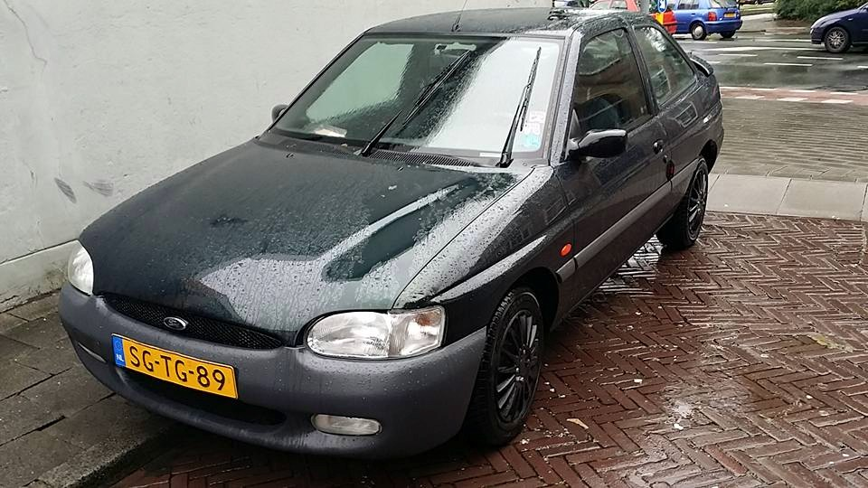Augustus 2015 - Oktober 2015
Braad raakte bij het verlaten van een rotonde de macht over het stuur kwijt door (naar eigen zeggen) toedoen van slechte banden, en reed hem aldus total loss. Naar de sloop gebracht.
Citroën BX
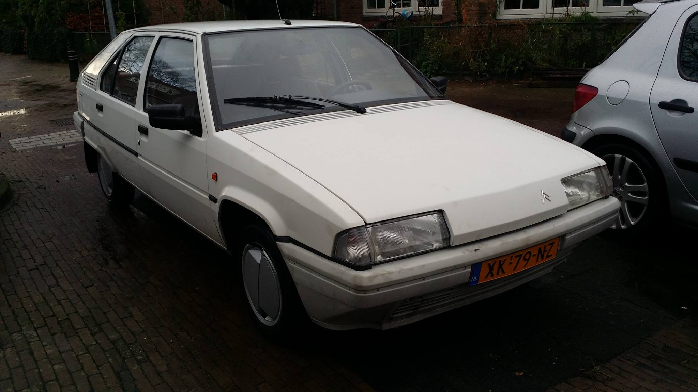Oktober 2015 - December 2015
Had een hele hoop problemen die gespecialiseerde kennis vereisen. Dat kon je de verkoper overigens niet kwalijk nemen, de auto kostte bijna niks en werd verkocht als zijnde "loop of sloop". Is na een maandje voor de sloopprijs verkocht aan een liefhebber.
Renault Twingo
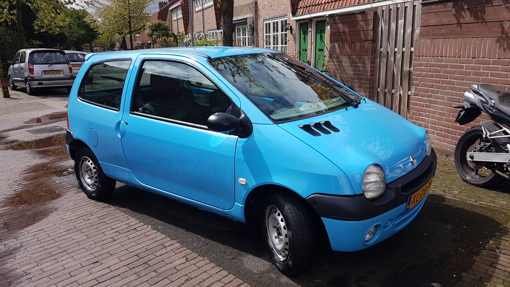December 2015 - Maart 2017
Een best prima auto voor het geld, waarin hij voor zijn doen lang heeft gereden. Maar Braad had bedacht dat hij een grotere en luxere auto nodig had, dat werd een BMW die hij voor de Twingo kon ruilen met voormalige vriend Sedin.
BMW 316i Compact
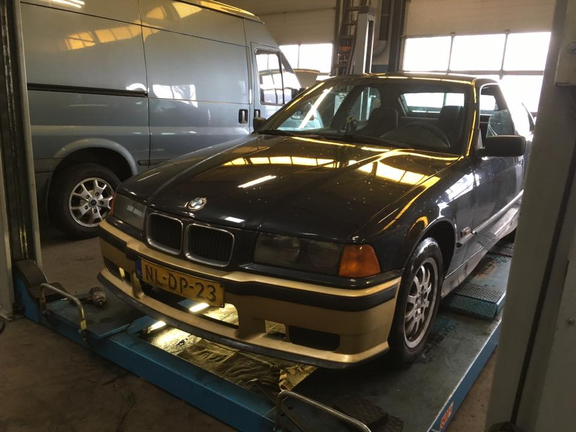Maart 2017 - Mei 2017
Een volstrekt afgeleefde auto met heel veel kilometers, veel roest, en allerlei gare technische problemen. Braad raakte daardoor gefrustreerd en de Bimmer moest na zo'n anderhalve maand alweer weg.
Volkswagen Polo
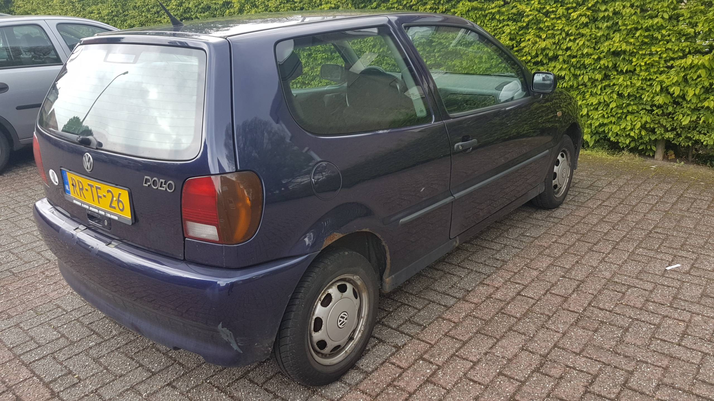Mei 2017 - Juli 2017
Door z'n vader bij De Baan uitgezocht toen hij van de BMW afwilde. Had ook veel roest en oorspronkelijk een lekkende waterpomp. Is door Braad naar de sloop gebracht omdat hij een boete kreeg en daar de auto de schuld van gaf.
Opel Corsa B
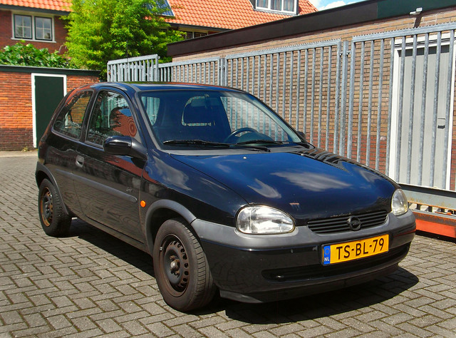Juli 2017 - April 2018
De welbekende auto die bij Klokje Rond verscheen [zie hieronder], Braad had een budget van slechts iets meer dan honderd euro en dit was de eerste de beste auto die betaalbaar was. Na een poosje wilde Braad iets dat er netter bij stond.
Renault Twingo
April 2018 - April 2018 (4 dagen)
Hij ruilde de Corsa in op een rode Twingo, een ex-schadebak, die bovendien ook nog eens een teruggedraaide teller had. Heeft ie een paar dagen mee gereden en toen is hij met zijn vader teruggegaan naar de handelaar om zijn oude Corsa terug te eisen.
Opel Corsa. Zelfde exemplaar als hierboven vermeld, linea recta naar De Baan gereden en daar ingeruild op een Xsara.
Citroën Xsara
April 2018 - Juni 2018
Problemen met een kromme achteras, problemen met brandende waarschuwingslampjes, problemen met niet fatsoenlijk sturen. Oh, en na een poosje kwam Braad erachter dat een auto van dit formaat voor hem te duur was. Ingeruild bij De Groot voor een Charade.
Daihatsu Charade
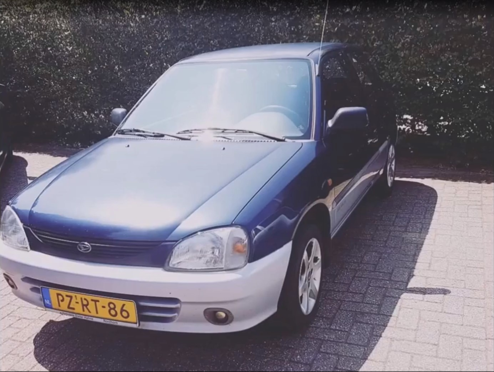Juni 2018 - mei 2019
Absoluut geen slecht wagentje voor wat het was, beetje roestige wielkasten maar geen heel dramatische problemen. Ingeruild omdat Braad het wederom op z'n heupen kreeg en zichzelf wijsmaakte dat hij een grotere en stillere auto moest hebben.
Ford Focus
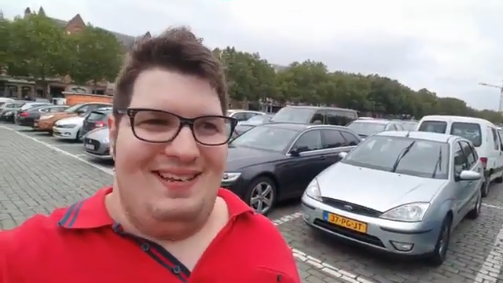Mei 2019 - mei 2020
Gekocht bij zijn oom, die een autohandeltje heeft op een kamp. Een brandend abs-waarschuwingslampje maar verder geen slechte auto. Net als de Xsara moest ook deze na een poosje weer ingeruild worden omdat hij te zwaar en onzuinig voor Braad's portemonnee was. Bij diezelfde oom toen ingeruild op de Clio.
Renault Clio
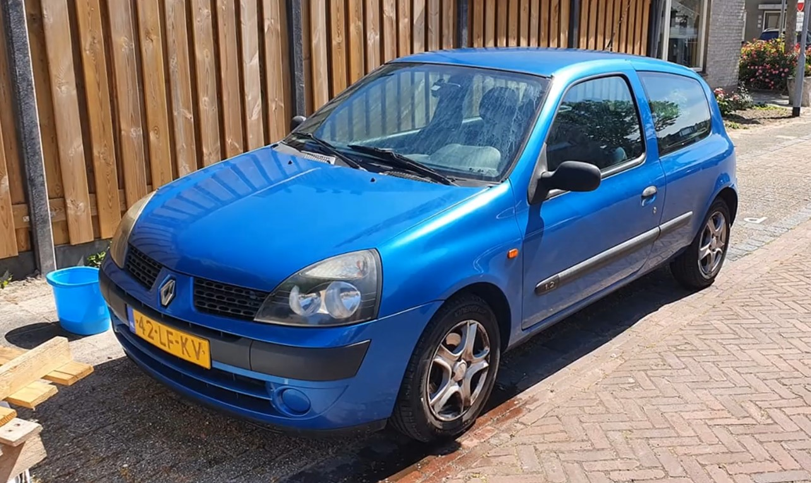Juni 2020 - augustus 2021
Zuiniger en lichter dan de Focus, leek een best goede auto totdat de koppakking lek raakte. Toen heel coulant door z'n oom gerepareerd, waarna Braad hem al snel inruilde op een C5. De reden van inruil is wat vaag, Braad beweerde dat de Clio niet door de apk kwam (hij is vervolgens ook gesloopt), maar het is nogal onlogisch dat z'n oom veel geld en moeite zou steken in het repareren van een hopeloze auto.
Citroën C5
.jpeg)
Augustus 2021 - september 2021
Zware en gecompliceerde auto, gekocht bij Neuweg en een van de goedkoopste exemplaren in Nederland. Dat had kennelijk zo z'n redenen, want er was van alles mis mee, o.a. met het veersysteem. Na ongeveer een maand ingeruild op de YRV.
Daihatsu YRV
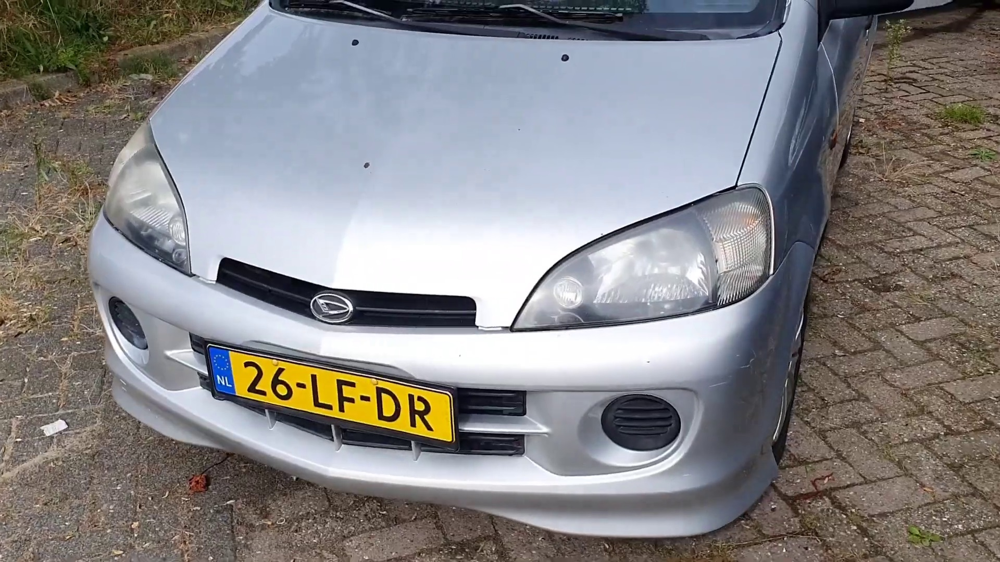September 2021 - januari 2022
Gekocht bij vast adresje De Baan. Rotte dorpels waarmee hij eigenlijk nooit door de apk had mogen komen, en een slecht lopende motor (later opgelost door de garage). Ingeruild toen Braad voor de zoveelste keer bedacht dat hij toch groter wilde rijden.
VW Golf
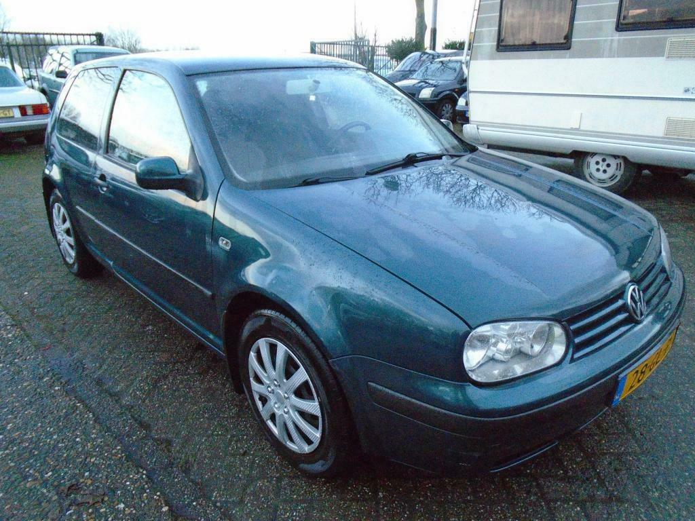Januari 2022 - januari 2022
Ook weer gekocht bij De Baan, het is mij een raadsel waarom hij, toen hij juist zo'n zak geld verdiend had in december, dit kansloze wrak kocht. Basisuitvoering, basismotor, heel veel schades, rare modificaties zoals een ienieminie sportstuur. Bleek ook weer allemaal problemen te hebben (goh), en werd binnen een paar weken ingeruild op de Ka.
Ford Ka
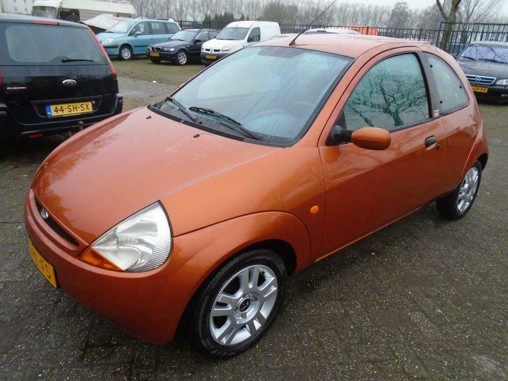Januari 2022 - April 2022
Wederom: gekocht bij De Baan. Stond er op de paar filmpjes die hij erover had gemaakt best netjes bij, maar moest weg omdat Braad's centen op waren.
Fiat Punto
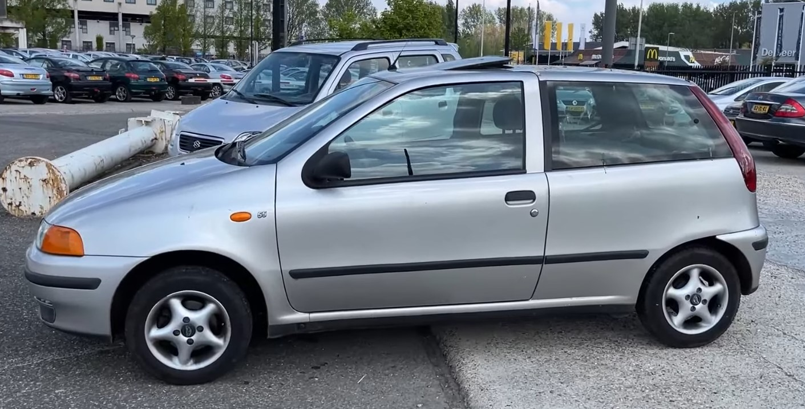April 2022 - Mei 2022
Staat officiëel op naam van Braddie's ma, maar Braddie nam deze auto vrijwel elke dag mee voor z'n doelloze rondjes door het Gooi.
-
Opel Corsa C
Mei 2022 - juli 2022

"Waar ik gisteren nog vol trots liet zien de 190k aangetikt te hebben met de Opel Corsa begon 'ie vlak daarna zeer vreemd stationair te lopen. En heel eerlijk? Na 2 maanden de eigenaar te zijn en meerdere vervangen onderdelen en constant uitlezen ben ik wel toe aan iets anders. Dit voelt als een bodemloze put."1
-
Renault Mégane
14 juli 2022 -
Wel toepasselijk, een auto met zo'n grote kont.
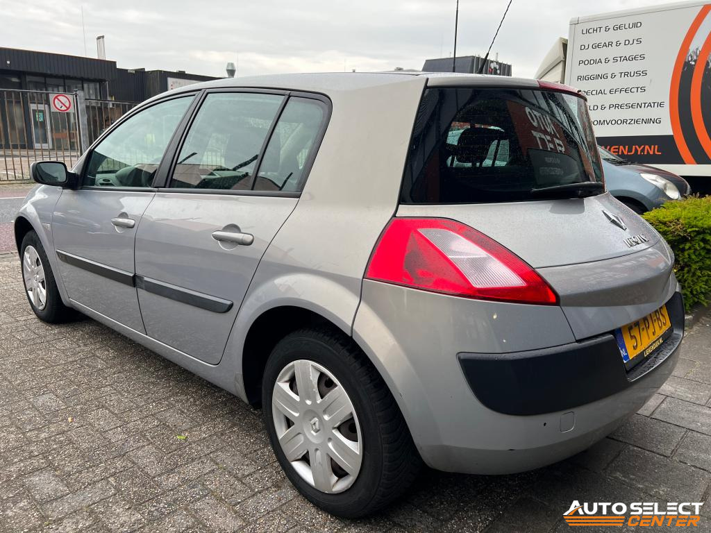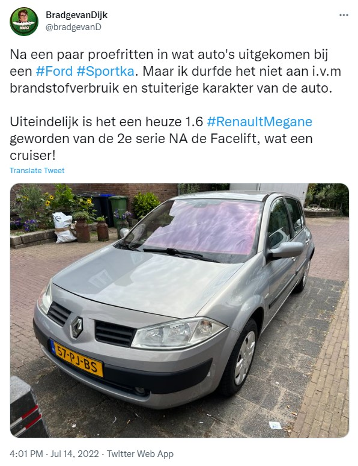
{kind=link}
U ziet, net als bij veel andere aspecten in zijn leven is Braad's autohistorie een aaneenschakeling van impulsen en regelmatig dezelfde fouten blijven maken. Als we ervan uitgaan dat de laatste Corsa echt van hem is en geen leenauto, zitten we aan 16 verschillende auto's. Er zullen er ongetwijfeld nog vele volgen...